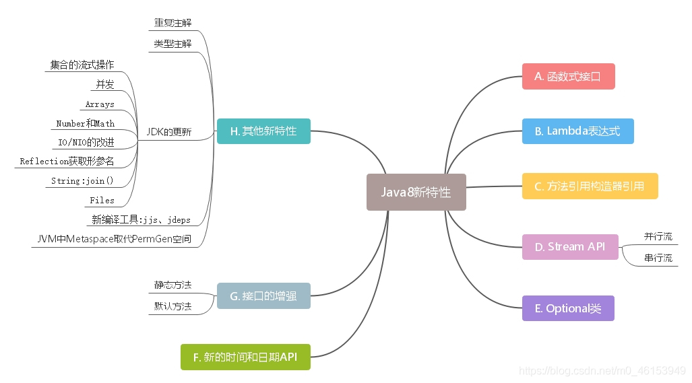
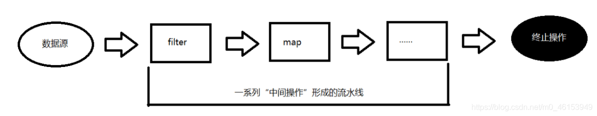
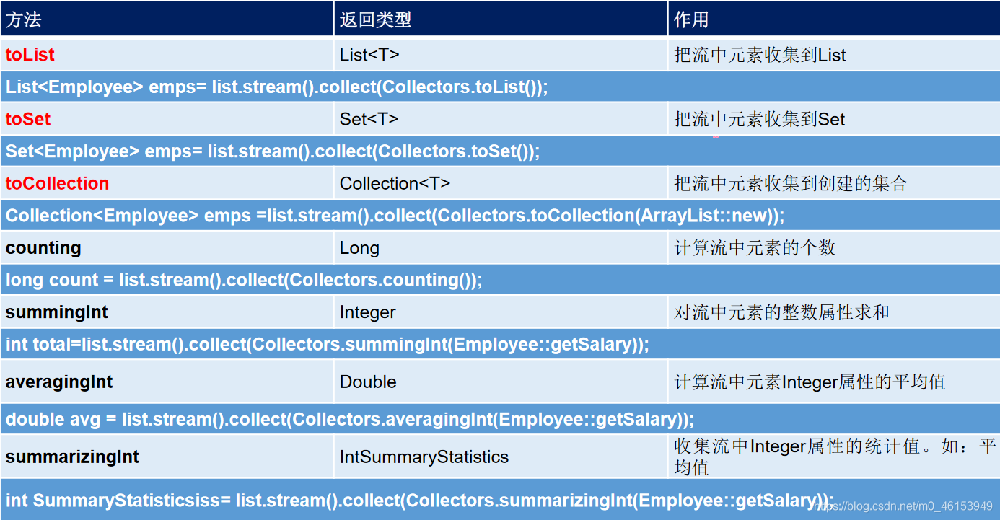
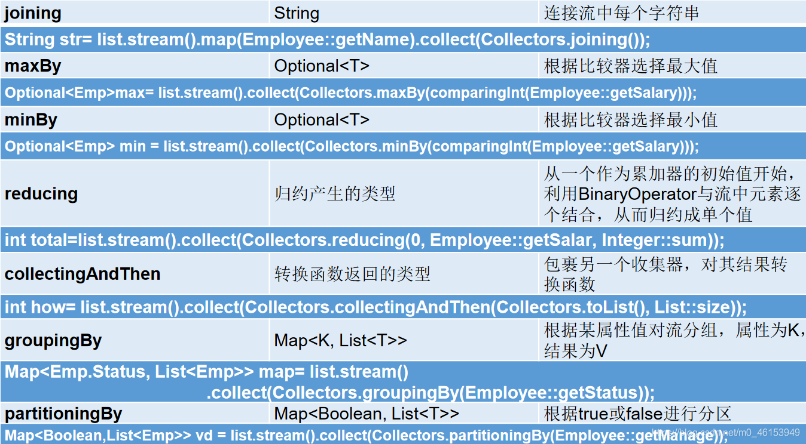

# 01、Java8 概述Java 8 (又称为 jdk 1.8) 是 Java 语言开发的一个主要版本。 Java 8 是 oracle 公司于 2014 年 3 月发布，可以看成是自 Java 5 以来最具革命性的版本。Java 8 为 Java 语言、编译器、类库、开发工具与 JVM 带来了大量新特性。 
# 02、Java8 新特性的好处速度更快 代码更少 (增加了新的语法：Lambda 表达式) 强大的 Stream API 便于并行 最大化减少空指针异常：Optional Nashorn 引擎，允许在 JVM 上运行 JS 应用 # 03、并行流与串行流并行流就是把一个内容分成多个数据块，并用不同的线程分别处理每个数据块的流。相比较串行的流，并行的流可以很大程度上提高程序的执行效率。
Java 8 中将并行进行了优化，我们可以很容易的对数据进行并行操作。Stream API 可以声明性地通过 parallel () 与 sequential () 在并行流与顺序流之间进行切换。
# 04、Lambda 表达式Lambda 是一个匿名函数，我们可以把 Lambda 表达式 理解为是一段可以传递的代码（将代码像数据一样进行传递）。使用它可以写出更简洁、更灵活的代码。作为一种更紧凑的代码风格，使 Java 的语言表达能力得到了提升。
注意：只有接口可以使用 lambda 表达式，且只有一个需要重写的方法体；
# 4.1、Lambda 表达式使用举例import org. junit. Test ; import java. util. Comparator ; * Lambda 表达式的使用举例 */ public class LambdaTest { @Test public void test ( ) { Runnable r1 = new Runnable ( ) { @Override public void run ( ) { System . out. println ( "长安欢迎您" ) ; } } ; r1. run ( ) ; System . out. println ( "+++++++++++++++++++++++++|" ) ; Runnable r2 = ( ) -> System . out. println ( "长安欢迎您" ) ; r2. run ( ) ; } @Test public void test2 ( ) { Comparator < Integer > = new Comparator < Integer > ( ) { @Override public int compare ( Integer o1, Integer o2) { return Integer . compare ( o1, o2) ; } } ; int compare1 = c1. compare ( 8 , 16 ) ; System . out. println ( compare1) ; System . out. println ( "+++++++++++++++++++++++" ) ; Comparator < Integer > = ( o1, o2) -> Integer . compare ( o1, o2) ; int compare2 = c2. compare ( 28 , 35 ) ; System . out. println ( compare2) ; System . out. println ( "+++++++++++++++++++++++++++" ) ; Comparator < Integer > = Integer :: compare ; int compare3 = c3. compare ( 28 , 35 ) ; System . out. println ( compare3) ; } }
# 4.2、Lambda 表达式语法的使用 1import org. junit. Test ; import java. util. ArrayList ; import java. util. function. Consumer ; * Lambda 表达式的使用 * * 1. 举例： (o1,o2) -> Integer.compare (o1,o2); * 2. 格式： * -> :lambda 操作符 或 箭头操作符 * -> 左边：lambda 形参列表 （其实就是接口中的抽象方法的形参列表） * -> 右边：lambda 体 （其实就是重写的抽象方法的方法体） * * 3.Lambda 表达式的使用：（分为 6 种情况介绍） */ public class LambdaTest1 { @Test public void test ( ) { Runnable r1 = new Runnable ( ) { @Override public void run ( ) { System . out. println ( "长安欢迎您" ) ; } } ; r1. run ( ) ; System . out. println ( "+++++++++++++++++++++++++|" ) ; Runnable r2 = ( ) -> System . out. println ( "长安欢迎您" ) ; r2. run ( ) ; } @Test public void test2 ( ) { Consumer < String > = new Consumer < String > ( ) { @Override public void accept ( String s) { System . out. println ( s) ; } } ; con. accept ( "善与恶的区别是什么？" ) ; System . out. println ( "+++++++++++++++++++" ) ; Consumer < String > = ( String s) -> { System . out. println ( s) ; } ; c1. accept ( "先天人性无善恶,后天人性有善恶。" ) ; } @Test public void test3 ( ) { Consumer < String > = ( String s) -> { System . out. println ( s) ; } ; c1. accept ( "先天人性无善恶,后天人性有善恶。" ) ; System . out. println ( "---------------------" ) ; Consumer < String > = ( s) -> { System . out. println ( s) ; } ; c2. accept ( "如果没有邪恶的话我们怎么会知道人世间的那些善良呢？" ) ; } @Test public void test4 ( ) { ArrayList < String > = new ArrayList < > ( ) ; int [ ] arr = { 1 , 2 , 3 } ; } }
# 4.3、Lambda 表达式语法的使用 2import org. junit. Test ; import java. util. Comparator ; import java. util. function. Consumer ; * Lambda 表达式的使用 * * 1. 举例： (o1,o2) -> Integer.compare (o1,o2); * 2. 格式： * -> :lambda 操作符 或 箭头操作符 * -> 左边：lambda 形参列表 （其实就是接口中的抽象方法的形参列表） * -> 右边：lambda 体 （其实就是重写的抽象方法的方法体） * * 3.Lambda 表达式的使用：（分为 6 种情况介绍） * * 总结： * -> 左边：lambda 形参列表的参数类型可以省略 (类型推断)；如果 lambda 形参列表只有一个参数，其一对 () 也可以省略 * -> 右边：lambda 体应该使用一对 {} 包裹；如果 lambda 体只有一条执行语句（可能是 return 语句），省略这一对 {} 和 return 关键字 */ public class LambdaTest1 { @Test public void test5 ( ) { Consumer < String > = ( s) -> { System . out. println ( s) ; } ; c1. accept ( "先天人性无善恶,后天人性有善恶。" ) ; System . out. println ( "---------------------" ) ; Consumer < String > = s -> { System . out. println ( s) ; } ; c2. accept ( "如果没有邪恶的话我们怎么会知道人世间的那些善良呢？" ) ; } @Test public void test6 ( ) { Comparator < Integer > = new Comparator < Integer > ( ) { @Override public int compare ( Integer o1, Integer o2) { System . out. println ( o1) ; System . out. println ( o2) ; return o1. compareTo ( o2) ; } } ; System . out. println ( c1. compare ( 15 , 23 ) ) ; System . out. println ( "\\\\\\\\\\\\\\\\\\\\\\\\\\" ) ; Comparator < Integer > = ( o1, o2) -> { System . out. println ( o1) ; System . out. println ( o2) ; return o1. compareTo ( o2) ; } ; System . out. println ( com2. compare ( 16 , 8 ) ) ; } @Test public void test7 ( ) { Comparator < Integer > = ( o1, o2) -> { return o1. compareTo ( o2) ; } ; System . out. println ( c1. compare ( 16 , 8 ) ) ; System . out. println ( "\\\\\\\\\\\\\\\\\\\\\\\\\\" ) ; Comparator < Integer > = ( o1, o2) -> o1. compareTo ( o2) ; System . out. println ( c2. compare ( 17 , 24 ) ) ; } @Test public void test8 ( ) { Consumer < String > = s -> { System . out. println ( s) ; } ; c1. accept ( "先天人性无善恶,后天人性有善恶。" ) ; System . out. println ( "---------------------" ) ; Consumer < String > = s -> System . out. println ( s) ; c2. accept ( "如果没有邪恶的话我们怎么会知道人世间的那些善良呢？" ) ; } }
# 05、函数式 (Functional) 接口# 5.1、函数式接口 的介绍 * 4.Lambda 表达式的本质：作为函数式接口的实例 * * 5. 如果一个接口中，只声明了一个抽象方法，则此接口就称为函数式接口。我们可以在一个接口上使用 @FunctionalInterface 注解， * 这样做可以检查它是否是一个函数式接口。 * */ * 自定义函数式接口 */ public interface MyInterFace { void method ( ) ; }
在 java.util.function 包下定义了 Java 8 的丰富的函数式接口 Java 从诞生日起就是一直倡导 “一切皆对象”，在 Java 里面面向对象 (OOP) 编程是一切。但是随着 python、scala 等语言的兴起和新技术的挑战，Java 不得不做出调整以便支持更加广泛的技术要求，也即 java 不但可以支持 OOP 还可以支持 OOF（面向函数编程） 在函数式编程语言当中，函数被当做一等公民对待。在将函数作为一等公民的编程语言中，Lambda 表达式的类型是函数。但是在 Java8 中，有所不同。在 Java8 中，Lambda 表达式是对象，而不是函数，它们必须依附于一类特别的对象类型 —— 函数式接口。 简单的说，在 Java8 中，Lambda 表达式就是一个函数式接口的实例。这就是 Lambda 表达式和函数式接口的关系。也就是说， 只要一个对象是函数式接口的实例，那么该对象就可以用 Lambda 表达式来表示 。 所以以前用匿名实现类表示的现在都可以用 Lambda 表达式来写 。# 5.2、Java 内置的函数式接口介绍及使用举例函数式接口 参数类型 返回类型 用途 Consumer 消费型接口T void 对类型为 T 的对象应用操作，包含方法： void accept(T t) Supplier 供给型接口无 T 返回类型为 T 的对象，包含方法： T get() Function<T, R> 函数型接口T R 对类型为 T 的对象应用操作，并返回结果。结果是 R 类型的对象。包含方法： R apply(T t) Predicate 断定型接口T boolean 确定类型为 T 的对象是否满足某约束，并返回 boolean 值。包含方法： boolean test(T t) BiFunction<T,U,R>T, U R 对类型为 T,U 参数应用操作，返回 R 类型的结果。包含方法为： Rapply(T t,U u) ; UnaryOperator (Function 子接口)T T 对类型为 T 的对象进行一元运算，并返回 T 类型的结果。包含方法为： Tapply(T t) ; BinaryOperator (BiFunction 子接口)T,T T 对类型为 T 的对象进行二元运算，并返回 T 类型的结果。包含方法为： Tapply(T t1,T t2) ; BiConsumer<T,U>T,U void 对类型为 T,U 参数应用操作。包含方法为： voidaccept(Tt,Uu) BiPredicate<T,U>T,U boolean 包含方法为： booleantest(Tt,Uu) ToIntFunctionT int 计算 int 值的函数 ToLongFunctionT long 计算 long 值的函数 ToDoubleFunctionT double 计算 double 值的函数 IntFunctionint R 参数为 int 类型的函数 LongFunctionlong R 参数为 long 类型的函数 DoubleFunctiondouble R 参数为 double 类型的函数
import org. junit. Test ; import java. util. ArrayList ; import java. util. Arrays ; import java. util. List ; import java. util. function. Consumer ; import java. util. function. Predicate ; * java 内置的 4 大核心函数式接口 * * 消费型接口 Consumer<T> void accept (T t) * 供给型接口 Supplier<T> T get () * 函数型接口 Function<T,R> R apply (T t) * 断定型接口 Predicate<T> boolean test (T t) */ public class LambdaTest2 { public void happyTime ( double money, Consumer < Double > ) { con. accept ( money) ; } @Test public void test ( ) { happyTime ( 30 , new Consumer < Double > ( ) { @Override public void accept ( Double aDouble) { System . out. println ( "熬夜太累了，点个外卖，价格为：" + aDouble) ; } } ) ; System . out. println ( "+++++++++++++++++++++++++" ) ; happyTime ( 20 , money -> System . out. println ( "熬夜太累了，吃口麻辣烫，价格为：" + money) ) ; } public List < String > filterString ( List < String > , Predicate < String > ) { ArrayList < String > = new ArrayList < > ( ) ; for ( String s : list) { if ( pre. test ( s) ) { filterList. add ( s) ; } } return filterList; } @Test public void test2 ( ) { List < String > = Arrays . asList ( "长安" , "上京" , "江南" , "渝州" , "凉州" , "兖州" ) ; List < String > = filterString ( list, new Predicate < String > ( ) { @Override public boolean test ( String s) { return s. contains ( "州" ) ; } } ) ; System . out. println ( filterStrs) ; List < String > = filterString ( list, s -> s. contains ( "州" ) ) ; System . out. println ( filterStrs1) ; } }
# 06、方法引用与构造器引用当要传递给 Lambda 体的操作，已经有实现的方法了，可以使用方法引用！ 方法引用可以看做是 Lambda 表达式深层次的表达。换句话说，方法引用就是 Lambda 表达式，也就是函数式接口的一个实例，通过方法的名字来指向一个方法，可以认为是 Lambda 表达式的一个语法糖。 要求：实现接口的抽象方法的参数列表和返回值类型，必须与方法引用的方法的参数列表和返回值类型保持一致！ 格式：使用操作符 “::” 将类 (或对象) 与方法名分隔开来。 如下三种主要使用情况：对象：：实例方法名 类：：静态方法名 类：：实例方法名 # 6.1、方法引用的使用情况 11、Employee 类
public class Employee { private int id; private String name; private int age; private double salary; public int getId ( ) { return id; } public void setId ( int id) { this . id = id; } public String getName ( ) { return name; } public void setName ( String name) { this . name = name; } public int getAge ( ) { return age; } public void setAge ( int age) { this . age = age; } public double getSalary ( ) { return salary; } public void setSalary ( double salary) { this . salary = salary; } public Employee ( ) { System . out. println ( "Employee()....." ) ; } public Employee ( int id) { this . id = id; System . out. println ( "Employee(int id)....." ) ; } public Employee ( int id, String name) { this . id = id; this . name = name; } public Employee ( int id, String name, int age, double salary) { this . id = id; this . name = name; this . age = age; this . salary = salary; } @Override public String toString ( ) { return "Employee{" + "id=" + id + ", name='" + name + '\'' + ", age=" + age + ", salary=" + salary + '}' ; } @Override public boolean equals ( Object o) { if ( this == o) return true ; if ( o == null || getClass ( ) != o. getClass ( ) ) return false ; Employee employee = ( Employee ) o; if ( id != employee. id) return false ; if ( age != employee. age) return false ; if ( Double . compare ( employee. salary, salary) != 0 ) return false ; return name != null ? name. equals ( employee. name) : employee. name == null ; } @Override public int hashCode ( ) { int result; long temp; result = id; result = 31 * result + ( name != null ? name. hashCode ( ) : 0 ) ; result = 31 * result + age; temp = Double . doubleToLongBits ( salary) ; result = 31 * result + ( int ) ( temp ^ ( temp >>> 32 ) ) ; return result; } }
2、测试类
import org. junit. Test ; import java. io. PrintStream ; import java. util. Comparator ; import java. util. function. BiPredicate ; import java. util. function. Consumer ; import java. util. function. Function ; import java. util. function. Supplier ; * 方法引用的使用 * * 1. 使用情境：当要传递给 Lambda 体的操作，已经有实现的方法了，可以使用方法引用！ * * 2. 方法引用，本质上就是 Lambda 表达式，而 Lambda 表达式作为函数式接口的实例。所以 * 方法引用，也是函数式接口的实例。 * * 3. 使用格式： 类 (或对象) :: 方法名 * * 4. 具体分为如下的三种情况： * 情况 1 对象：：非静态方法 * 情况 2 类：：静态方法 * * 情况 3 类：：非静态方法 * * 5. 方法引用使用的要求：要求接口中的抽象方法的形参列表和返回值类型与方法引用的方法的 * 形参列表和返回值类型相同！（针对于情况 1 和情况 2） */ public class MethodRefTest { @Test public void test ( ) { Consumer < String > = str -> System . out. println ( str) ; c1. accept ( "兖州" ) ; System . out. println ( "+++++++++++++" ) ; PrintStream ps = System . out; Consumer < String > = ps:: println ; c2. accept ( "xian" ) ; } @Test public void test2 ( ) { Employee emp = new Employee ( 004 , "Nice" , 19 , 4200 ) ; Supplier < String > = ( ) -> emp. getName ( ) ; System . out. println ( sk1. get ( ) ) ; System . out. println ( "*******************" ) ; Supplier < String > = emp:: getName ; System . out. println ( sk2. get ( ) ) ; } }
# 6.2、方法引用的使用情况 21、Employee 类 —— 同上
2、测试类
import org. junit. Test ; import java. util. Comparator ; import java. util. function. Function ; public class MethodRefTest { @Test public void test3 ( ) { Comparator < Integer > = ( t1, t2) -> Integer . compare ( t1, t2) ; System . out. println ( com1. compare ( 21 , 20 ) ) ; System . out. println ( "+++++++++++++++" ) ; Comparator < Integer > = Integer :: compare ; System . out. println ( com2. compare ( 15 , 7 ) ) ; } @Test public void test4 ( ) { Function < Double , Long > = new Function < Double , Long > ( ) { @Override public Long apply ( Double d) { return Math . round ( d) ; } } ; System . out. println ( "++++++++++++++++++" ) ; Function < Double , Long > = d -> Math . round ( d) ; System . out. println ( func1. apply ( 14.1 ) ) ; System . out. println ( "++++++++++++++++++" ) ; Function < Double , Long > = Math :: round ; System . out. println ( func2. apply ( 17.4 ) ) ; } }
# 6.2、方法引用的使用情况 31、Employee 类 —— 同上
2、测试类
import org. junit. Test ; import java. util. Comparator ; import java. util. function. BiPredicate ; import java. util. function. Function ; public class MethodRefTest { @Test public void test5 ( ) { Comparator < String > = ( s1, s2) -> s1. compareTo ( s2) ; System . out. println ( com1. compare ( "abc" , "abd" ) ) ; System . out. println ( "++++++++++++++++" ) ; Comparator < String > = String :: compareTo ; System . out. println ( com2. compare ( "abd" , "abm" ) ) ; } @Test public void test6 ( ) { BiPredicate < String , String > = ( s1, s2) -> s1. equals ( s2) ; System . out. println ( pre1. test ( "MON" , "MON" ) ) ; System . out. println ( "++++++++++++++++++++" ) ; BiPredicate < String , String > = String :: equals ; System . out. println ( pre2. test ( "MON" , "MON" ) ) ; } @Test public void test7 ( ) { Employee employee = new Employee ( 007 , "Ton" , 21 , 8000 ) ; Function < Employee , String > = e -> e. getName ( ) ; System . out. println ( func1. apply ( employee) ) ; System . out. println ( "++++++++++++++++++++++++" ) ; Function < Employee , String > = Employee :: getName ; System . out. println ( f2. apply ( employee) ) ; } }
# 6.4、构造器引用与数组 引用的使用格式：ClassName::new
与函数式接口相结合，自动与函数式接口中方法兼容。
可以把构造器引用赋值给定义的方法，要求构造器参数列表要与接口中抽象方法的参数列表一致！且方法的返回值即为构造器对应类的对象。
1、Employee 类 —— 同上
2、测试类
import org. junit. Test ; import java. util. Arrays ; import java. util. function. BiFunction ; import java. util. function. Function ; import java. util. function. Supplier ; * 一、构造器引用 * 和方法引用类似，函数式接口的抽象方法的形参列表和构造器的形参列表一致。 * 抽象方法的返回值类型即为构造器所属的类的类型 * * 二、数组引用 * 可以把数组看做是一个特殊的类，则写法与构造器引用一致。 */ public class MethodRefTest { @Test public void test ( ) { Supplier < Employee > = new Supplier < Employee > ( ) { @Override public Employee get ( ) { return new Employee ( ) ; } } ; System . out. println ( "+++++++++++++++++++" ) ; Supplier < Employee > = ( ) -> new Employee ( ) ; System . out. println ( sk1. get ( ) ) ; System . out. println ( "+++++++++++++++++++" ) ; Supplier < Employee > = Employee :: new ; System . out. println ( sk2. get ( ) ) ; } @Test public void test2 ( ) { Function < Integer , Employee > = id -> new Employee ( id) ; Employee employee = f1. apply ( 7793 ) ; System . out. println ( employee) ; System . out. println ( "+++++++++++++++++++" ) ; Function < Integer , Employee > = Employee :: new ; Employee employee1 = f2. apply ( 4545 ) ; System . out. println ( employee1) ; } @Test public void test3 ( ) { BiFunction < Integer , String , Employee > = ( id, name) -> new Employee ( id, name) ; System . out. println ( f1. apply ( 2513 , "Fruk" ) ) ; System . out. println ( "*******************" ) ; BiFunction < Integer , String , Employee > = Employee :: new ; System . out. println ( f2. apply ( 9526 , "Bon" ) ) ; } @Test public void test4 ( ) { Function < Integer , String [ ] > f1 = length -> new String [ length] ; String [ ] arr1 = f1. apply ( 7 ) ; System . out. println ( Arrays . toString ( arr1) ) ; System . out. println ( "+++++++++++++++++++" ) ; Function < Integer , String [ ] > f2 = String [ ] :: new ; String [ ] arr2 = f2. apply ( 9 ) ; System . out. println ( Arrays . toString ( arr2) ) ; } }
# 07、强大的 Stream API# 7.1、Stream API 的概述Java8 中有两大最为重要的改变。第一个是 Lambda 表达式；另外一个则是 Stream API。 Stream API ( java.util.stream ) 把真正的函数式编程风格引入到 Java 中。这是目前为止对 Java 类库最好的补充，因为 Stream API 可以极大提供 Java 程序员的生产力，让程序员写出高效率、干净、简洁的代码。 Stream 是 Java8 中处理集合的关键抽象概念，它可以指定你希望对集合进行的操作，可以执行非常复杂的查找、过滤和映射数据等操作。使用 Stream API 对集合数据进行操作，就类似于使用 SQL 执行的数据库查询。也可以使用 Stream API 来并行执行操作。简言之，Stream API 提供了一种高效且易于使用的处理数据的方式。 为什么要使用 Stream API实际开发中，项目中多数数据源都来自于 Mysql，Oracle 等。但现在数据源可以更多了，有 MongDB，Radis 等，而这些 NoSQL 的数据就需要 Java 层面去处理 。Stream 和 Collection 集合的区别：Collection 是一种静态的内存数据结构，而 Stream 是有关计算的。前者是主要面向内存，存储在内存中，后者主要是面向 CPU，通过 CPU 实现计算 。 * 1.Stream 关注的是对数据的运算，与 CPU 打交道 * 集合关注的是数据的存储，与内存打交道 * * 2. * ①Stream 自己不会存储元素。 * ②Stream 不会改变源对象。相反，他们会返回一个持有结果的新 Stream。 * ③Stream 操作是延迟执行的。这意味着他们会等到需要结果的时候才执行 * * 3.Stream 执行流程 * ① Stream 的实例化 * ② 一系列的中间操作（过滤、映射、...) * ③ 终止操作 * * 4. 说明： * 4.1 一个中间操作链，对数据源的数据进行处理 * 4.2 一旦执行终止操作，就执行中间操作链，并产生结果。之后，不会再被使用 */

# 7.2、Stream 的实例化1、EmployeeData 类
import java. util. ArrayList ; import java. util. List ; * 提供用于测试的数据 */ public class EmployeeData { public static List < Employee > getEmployees ( ) { List < Employee > = new ArrayList < > ( ) ; list. add ( new Employee ( 1001 , "马化腾" , 34 , 6000.38 ) ) ; list. add ( new Employee ( 1002 , "马云" , 12 , 9876.12 ) ) ; list. add ( new Employee ( 1003 , "刘强东" , 33 , 3000.82 ) ) ; list. add ( new Employee ( 1004 , "雷军" , 26 , 7657.37 ) ) ; list. add ( new Employee ( 1005 , "李彦宏" , 65 , 5555.32 ) ) ; list. add ( new Employee ( 1006 , "比尔盖茨" , 42 , 9500.43 ) ) ; list. add ( new Employee ( 1007 , "任正非" , 26 , 4333.32 ) ) ; list. add ( new Employee ( 1008 , "扎克伯格" , 35 , 2500.32 ) ) ; return list; } }
2、Employee 类
public class Employee { private int id; private String name; private int age; private double salary; public int getId ( ) { return id; } public void setId ( int id) { this . id = id; } public String getName ( ) { return name; } public void setName ( String name) { this . name = name; } public int getAge ( ) { return age; } public void setAge ( int age) { this . age = age; } public double getSalary ( ) { return salary; } public void setSalary ( double salary) { this . salary = salary; } public Employee ( ) { System . out. println ( "Employee()....." ) ; } public Employee ( int id) { this . id = id; System . out. println ( "Employee(int id)....." ) ; } public Employee ( int id, String name) { this . id = id; this . name = name; } public Employee ( int id, String name, int age, double salary) { this . id = id; this . name = name; this . age = age; this . salary = salary; } @Override public String toString ( ) { return "Employee{" + "id=" + id + ", name='" + name + '\'' + ", age=" + age + ", salary=" + salary + '}' ; } @Override public boolean equals ( Object o) { if ( this == o) return true ; if ( o == null || getClass ( ) != o. getClass ( ) ) return false ; Employee employee = ( Employee ) o; if ( id != employee. id) return false ; if ( age != employee. age) return false ; if ( Double . compare ( employee. salary, salary) != 0 ) return false ; return name != null ? name. equals ( employee. name) : employee. name == null ; } @Override public int hashCode ( ) { int result; long temp; result = id; result = 31 * result + ( name != null ? name. hashCode ( ) : 0 ) ; result = 31 * result + age; temp = Double . doubleToLongBits ( salary) ; result = 31 * result + ( int ) ( temp ^ ( temp >>> 32 ) ) ; return result; } }
3、测试类
import github2. Employee ; import github2. EmployeeData ; import org. junit. Test ; import java. util. Arrays ; import java. util. List ; import java. util. stream. IntStream ; import java. util. stream. Stream ; * 测试 Stream 的实例化 */ public class StreamAPITest { @Test public void test ( ) { List < Employee > = EmployeeData . getEmployees ( ) ; Stream < Employee > = employees. stream ( ) ; Stream < Employee > = employees. parallelStream ( ) ; } @Test public void test2 ( ) { int [ ] arr = new int [ ] { 1 , 2 , 3 , 4 , 5 , 6 } ; IntStream stream = Arrays . stream ( arr) ; Employee e1 = new Employee ( 1001 , "Hom" ) ; Employee e2 = new Employee ( 1002 , "Nut" ) ; Employee [ ] arr1 = new Employee [ ] { e1, e2} ; Stream < Employee > = Arrays . stream ( arr1) ; } @Test public void test3 ( ) { Stream < Integer > = Stream . of ( 1 , 2 , 3 , 4 , 5 , 6 ) ; } @Test public void test4 ( ) { Stream . iterate ( 0 , t -> t + 2 ) . limit ( 10 ) . forEach ( System . out:: println ) ; Stream . generate ( Math :: random ) . limit ( 10 ) . forEach ( System . out:: println ) ; } }
# 7.3、Stream 的中间操作：筛选与切片多个中间操作可以连接起来形成一个流水线，除非流水线上触发终止操作，否则中间操作不会执行任何的处理！而在终止操作时一次性全部处理，称为 “惰性求值”。
方法 描述 filter(Predicate p)接收 Lambda ，从流中排除某些元素 distinct()筛选，通过流所生成元素的 hashCode () 和 equals () 去除重复元素 limit(long maxSize)截断流，使其元素不超过给定数量 skip(long n)跳过元素，返回一个扔掉了前 n 个元素的流。若流中元素不足 n 个，则返回一个空流。与 limit(n) 互补
import github2. Employee ; import github2. EmployeeData ; import org. junit. Test ; import java. util. List ; import java. util. stream. Stream ; * 测试 Stream 的中间操作 */ public class StreamAPITest2 { @Test public void test ( ) { List < Employee > = EmployeeData . getEmployees ( ) ; Stream < Employee > = list. stream ( ) ; stream. filter ( e -> e. getSalary ( ) > 7000 ) . forEach ( System . out:: println ) ; System . out. println ( "+++++++++++++++++++++++" ) ; list. stream ( ) . limit ( 3 ) . forEach ( System . out:: println ) ; System . out. println ( "+++++++++++++++++++++++" ) ; list. stream ( ) . skip ( 3 ) . forEach ( System . out:: println ) ; System . out. println ( "+++++++++++++++++++++++" ) ; list. add ( new Employee ( 1013 , "李飞" , 42 , 8500 ) ) ; list. add ( new Employee ( 1013 , "李飞" , 41 , 8200 ) ) ; list. add ( new Employee ( 1013 , "李飞" , 28 , 6000 ) ) ; list. add ( new Employee ( 1013 , "李飞" , 39 , 7800 ) ) ; list. add ( new Employee ( 1013 , "李飞" , 40 , 8000 ) ) ; list. stream ( ) . distinct ( ) . forEach ( System . out:: println ) ; } }
# 7.4、Stream 的中间操作：映射方法 描述 map(Function f)接收一个函数作为参数，该函数会被应用到每个元素上，并将其映射成一个新的元素。 mapToDouble(ToDoubleFunction f)接收一个函数作为参数，该函数会被应用到每个元素上，产生一个新的 DoubleStream。 mapToInt(ToIntFunction f)接收一个函数作为参数，该函数会被应用到每个元素上，产生一个新的 IntStream。 mapToLong(ToLongFunction f)接收一个函数作为参数，该函数会被应用到每个元素上，产生一个新的 LongStream。 flatMap(Function f)接收一个函数作为参数，将流中的每个值都换成另一个流，然后把所有流连接成一个流
import github2. Employee ; import github2. EmployeeData ; import org. junit. Test ; import java. util. ArrayList ; import java. util. Arrays ; import java. util. List ; import java. util. stream. Stream ; * 测试 Stream 的中间操作 */ public class StreamAPITest2 { @Test public void test2 ( ) { List < String > = Arrays . asList ( "aa" , "bb" , "cc" , "dd" ) ; list. stream ( ) . map ( str -> str. toUpperCase ( ) ) . forEach ( System . out:: println ) ; List < Employee > = EmployeeData . getEmployees ( ) ; Stream < String > = employees. stream ( ) . map ( Employee :: getName ) ; namesStream. filter ( name -> name. length ( ) > 3 ) . forEach ( System . out:: println ) ; System . out. println ( ) ; Stream < Stream < Character > > = list. stream ( ) . map ( StreamAPITest2 :: fromStringToStream ) ; streamStream. forEach ( s -> { s. forEach ( System . out:: println ) ; } ) ; System . out. println ( "++++++++++++++++++++++" ) ; Stream < Character > = list. stream ( ) . flatMap ( StreamAPITest2 :: fromStringToStream ) ; characterStream. forEach ( System . out:: println ) ; } public static Stream < Character > fromStringToStream ( String str) { ArrayList < Character > = new ArrayList < > ( ) ; for ( Character c : str. toCharArray ( ) ) { list. add ( c) ; } return list. stream ( ) ; } @Test public void test3 ( ) { ArrayList list1 = new ArrayList ( ) ; list1. add ( 25 ) ; list1. add ( 33 ) ; list1. add ( 14 ) ; ArrayList list2 = new ArrayList ( ) ; list2. add ( 51 ) ; list2. add ( 23 ) ; list2. add ( 61 ) ; list1. addAll ( list2) ; System . out. println ( list1) ; } }
# 7.5、Stream 的中间操作：排序方法 描述 sorted()产生一个新流，其中按自然顺序排序 sorted(Comparator com)产生一个新流，其中按比较器顺序排序
import github2. Employee ; import github2. EmployeeData ; import org. junit. Test ; import java. util. ArrayList ; import java. util. Arrays ; import java. util. List ; import java. util. stream. Stream ; * 测试 Stream 的中间操作 */ public class StreamAPITest2 { @Test public void test4 ( ) { List < Integer > = Arrays . asList ( 25 , 45 , 36 , 12 , 85 , 64 , 72 , - 95 , 4 ) ; list. stream ( ) . sorted ( ) . forEach ( System . out:: println ) ; List < Employee > = EmployeeData . getEmployees ( ) ; employees. stream ( ) . sorted ( ( e1, e2) -> { int ageValue = Integer . compare ( e1. getAge ( ) , e2. getAge ( ) ) ; if ( ageValue != 0 ) { return ageValue; } else { return - Double . compare ( e1. getSalary ( ) , e2. getSalary ( ) ) ; } } ) . forEach ( System . out:: println ) ; } }
# 7.6、Stream 的终止操作：匹配与查找终端操作会从流的流水线生成结果。其结果可以是任何不是流的值，例如：List、Integer，甚至是 void 。 流进行了终止操作后，不能再次使用。 方法 描述 allMatch(Predicate p)检查是否匹配所有元素 anyMatch(Predicate p)检查是否至少匹配一个元素 noneMatch(Predicate p)检查是否没有匹配所有元素 findFirst()返回第一个元素 findAny()返回当前流中的任意元素 count()返回流中元素总数 max(Comparator c)返回流中最大值 min(Comparator c)返回流中最小值 forEach(Consumer c)内部迭代 (使用 Collection 接口需要用户去做迭代，称为外部迭代。相反，Stream API 使用内部迭代 —— 它帮你把迭代做了)
import github2. Employee ; import github2. EmployeeData ; import org. junit. Test ; import java. util. List ; import java. util. Optional ; import java. util. stream. Stream ; public class StreamAPITest3 { @Test public void test ( ) { List < Employee > = EmployeeData . getEmployees ( ) ; boolean allMatch = employees. stream ( ) . allMatch ( e -> e. getAge ( ) > 23 ) ; System . out. println ( allMatch) ; boolean anyMatch = employees. stream ( ) . anyMatch ( e -> e. getSalary ( ) > 9000 ) ; System . out. println ( anyMatch) ; boolean noneMatch = employees. stream ( ) . noneMatch ( e -> e. getName ( ) . startsWith ( "马" ) ) ; System . out. println ( noneMatch) ; Optional < Employee > = employees. stream ( ) . findFirst ( ) ; System . out. println ( employee) ; Optional < Employee > = employees. parallelStream ( ) . findAny ( ) ; System . out. println ( employee1) ; } @Test public void test2 ( ) { List < Employee > = EmployeeData . getEmployees ( ) ; long count = employees. stream ( ) . filter ( e -> e. getSalary ( ) > 4500 ) . count ( ) ; System . out. println ( count) ; Stream < Double > = employees. stream ( ) . map ( e -> e. getSalary ( ) ) ; Optional < Double > = salaryStream. max ( Double :: compare ) ; System . out. println ( maxSalary) ; Optional < Employee > = employees. stream ( ) . min ( ( e1, e2) -> Double . compare ( e1. getSalary ( ) , e2. getSalary ( ) ) ) ; System . out. println ( employee) ; System . out. println ( ) ; employees. stream ( ) . forEach ( System . out:: println ) ; employees. forEach ( System . out:: println ) ; } }
# 7.7、Stream 的终止操作：归约方法 描述 reduce(T iden, BinaryOperator b)可以将流中元素反复结合起来，得到一个值。返回 T reduce(BinaryOperator b)可以将流中元素反复结合起来，得到一个值。返回 Optional
备注：map 和 reduce 的连接通常称为 map-reduce 模式，因 Google 用它来进行网络搜索而出名。
import github2. Employee ; import github2. EmployeeData ; import org. junit. Test ; import java. util. Arrays ; import java. util. List ; import java. util. Optional ; import java. util. stream. Stream ; public class StreamAPITest3 { @Test public void test3 ( ) { List < Integer > = Arrays . asList ( 72 , 25 , 32 , 34 , 43 , 56 , 81 , 15 , 29 , 71 ) ; Integer sum = list. stream ( ) . reduce ( 0 , Integer :: sum ) ; System . out. println ( sum) ; List < Employee > = EmployeeData . getEmployees ( ) ; Stream < Double > = employees. stream ( ) . map ( Employee :: getSalary ) ; Optional < Double > = salaryStream. reduce ( ( d1, d2) -> d1 + d2) ; System . out. println ( sumMoney. get ( ) ) ; } }
# 7.8、Stream 的终止操作：收集方法 描述 collect(Collector c)将流转换为其他形式。接收一个 Collector 接口的实现，用于给 Stream 中元素做汇总的方法
import github2. Employee ; import github2. EmployeeData ; import org. junit. Test ; import java. util. Arrays ; import java. util. List ; import java. util. Optional ; import java. util. Set ; import java. util. stream. Collectors ; import java. util. stream. Stream ; public class StreamAPITest3 { @Test public void test4 ( ) { List < Employee > = EmployeeData . getEmployees ( ) ; List < Employee > = employees. stream ( ) . filter ( e -> e. getSalary ( ) > 6000 ) . collect ( Collectors . toList ( ) ) ; employeeList. forEach ( System . out:: println ) ; System . out. println ( "++++++++++++++++++" ) ; Set < Employee > = employees. stream ( ) . filter ( e -> e. getSalary ( ) > 6000 ) . collect ( Collectors . toSet ( ) ) ; employeeSet. forEach ( System . out:: println ) ; } }
Collector 接口中方法的实现决定了如何对流执行收集的操作 (如收集到 List、Set、Map )。 Collectors 实用类提供了很多静态方法，可以方便地创建常见收集器实例，具体方法与实例如下表：


# 08、Optional 类# 8.1、Optional 类的介绍到目前为止，臭名昭著的空指针异常是导致 Java 应用程序失败的最常见原因。以前，为了解决空指针异常，Google 公司著名的 Guava 项目引入了 Optional 类，Guava 通过使用检查空值的方式来防止代码污染，它鼓励程序员写更干净的代码。受到 Google Guava 的启发，Optional 类已经成为 Java 8 类库的一部分。
Optional 类 ( java.util.Optional ) 是一个容器类，它可以保存类型 T 的值，代表这个值存在。或者仅仅保存 null ，表示这个值不存在。原来用 null 表示一个值不存在，现 在Optional 可以更好的表达这个概念。并且可以避免空指针异常。Optional 类的 Javadoc 描述如下：这是一个可以为 null 的容器对象。如果值存在则 isPresent() 方法会返回 true ，调用 get() 方法会返回该对象。 Optional 提供很多有用的方法，这样我们就不用显式进行空值检测。 创建 Optional 类对象的方法：Optional.of(T t) : 创建一个 Optional 实例，t 必须非空；Optional.empty() : 创建一个空的 Optional 实例Optional.ofNullable(T t )：t 可以为 null 判断 Optional 容器中是否包含对象：boolean isPresent() : 判断是否包含对象void ifPresent(Consumer<? super T> consumer) ：如果有值，就执行 Consumer 接口的实现代码，并且该值会作为参数传给它。 获取 Optional 容器的对象：T get() : 如果调用对象包含值，返回该值，否则抛异常T orElse(T other) ：如果有值则将其返回，否则返回指定的 other 对象。T orElseGet(Supplier<? extends T> other) ：如果有值则将其返回，否则返回由 Supplier 接口实现提供的对象。T orElseThrow(Supplier<? extends X> exceptionSupplier) ：如果有值则将其返回，否则抛出由 Supplier 接口实现提供的异常。 1、Boy 类
public class Boy { private Girl girl; public Boy ( ) { } public Boy ( Girl girl) { this . girl = girl; } public Girl getGirl ( ) { return girl; } public void setGirl ( Girl girl) { this . girl = girl; } @Override public String toString ( ) { return "Boy{" + "girl=" + girl + '}' ; } }
2、Girl 类
public class Girl { private String name; public Girl ( ) { } public Girl ( String name) { this . name = name; } public String getName ( ) { return name; } public void setName ( String name) { this . name = name; } @Override public String toString ( ) { return "Girl{" + "name='" + name + '\'' + '}' ; } }
3、测试类
import org. junit. Test ; import java. util. Optional ; * Optional 类：为了在程序中避免出现空指针异常而创建的。 * * 常用的方法：ofNullable (T t) * orElse (T t) */ public class OptionalTest { * Optional.of (T t) : 创建一个 Optional 实例，t 必须非空； * Optional.empty () : 创建一个空的 Optional 实例 * Optional.ofNullable (T t)：t 可以为 null */ @Test public void test ( ) { Girl girl = new Girl ( ) ; Optional < Girl > = Optional . of ( girl) ; } @Test public void test2 ( ) { Girl girl = new Girl ( ) ; Optional < Girl > = Optional . ofNullable ( girl) ; System . out. println ( optionalGirl) ; Girl girl1 = optionalGirl. orElse ( new Girl ( "" ) ) ; System . out. println ( girl1) ; } }
# 8.2、Optional 类的使用举例1、测试类
import org. junit. Test ; import java. util. Optional ; * Optional 类：为了在程序中避免出现空指针异常而创建的。 * * 常用的方法：ofNullable (T t) * orElse (T t) */ public class OptionalTest { @Test public void test3 ( ) { Boy boy = new Boy ( ) ; boy = null ; String girlName = getGirlName ( boy) ; System . out. println ( girlName) ; } private String getGirlName ( Boy boy) { return boy. getGirl ( ) . getName ( ) ; } public String getGirlName1 ( Boy boy) { if ( boy != null ) { Girl girl = boy. getGirl ( ) ; if ( girl != null ) { return girl. getName ( ) ; } } return null ; } @Test public void test4 ( ) { Boy boy = new Boy ( ) ; boy = null ; String girlName = getGirlName1 ( boy) ; System . out. println ( girlName) ; } public String getGirlName2 ( Boy boy) { Optional < Boy > = Optional . ofNullable ( boy) ; Boy boy1 = boyOptional. orElse ( new Boy ( new Girl ( "朱淑贞" ) ) ) ; Girl girl = boy1. getGirl ( ) ; Optional < Girl > = Optional . ofNullable ( girl) ; Girl girl1 = girlOptional. orElse ( new Girl ( "阿青" ) ) ; return girl1. getName ( ) ; } @Test public void test5 ( ) { Boy boy = null ; boy = new Boy ( ) ; boy = new Boy ( new Girl ( "李清照" ) ) ; String girlName = getGirlName2 ( boy) ; System . out. println ( girlName) ; } }